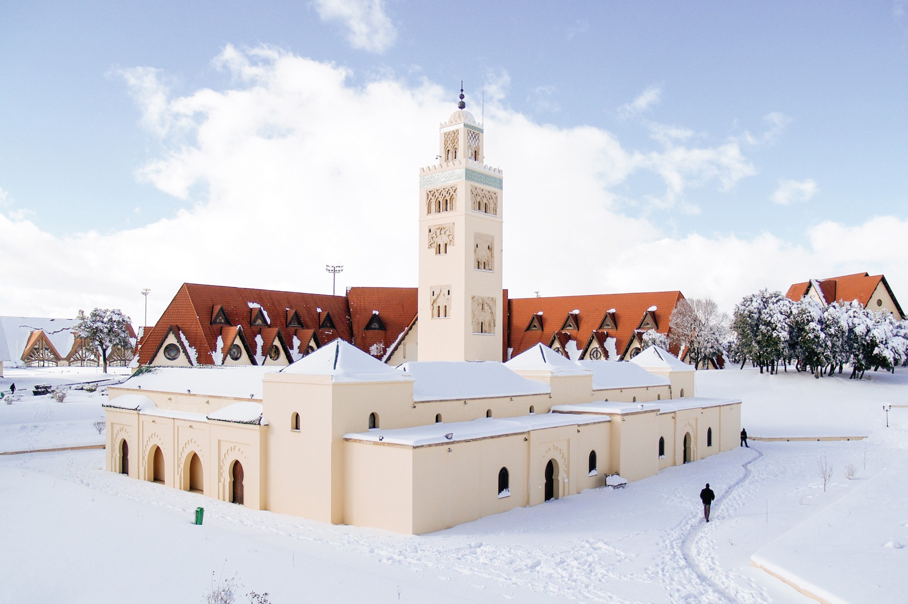
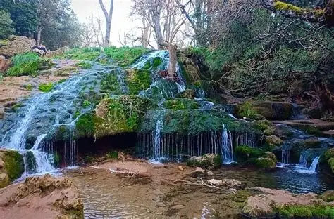
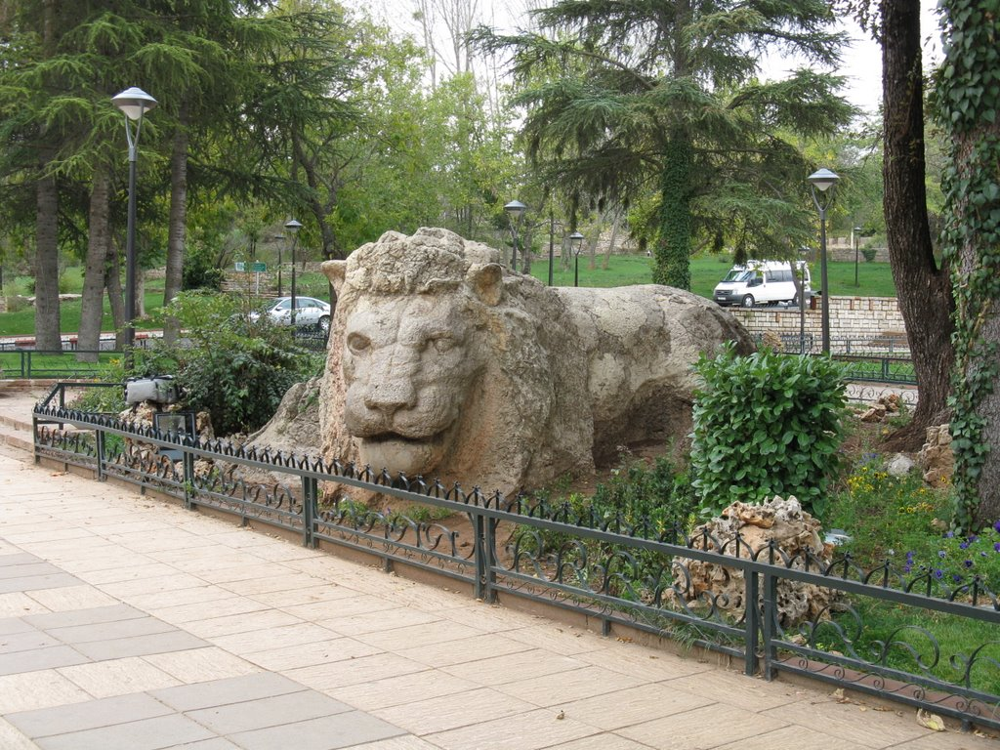

Ifrane : La petite Suisse marocaine.



↔ Utilisez la barre orange ci-dessous ou Shift + Molette pour défiler.
Pourquoi choisir Ifrane ?
Située dans le Moyen Atlas, Ifrane est une ville étonnante avec ses toits pointus et ses parcs verdoyants. C'est le point de départ idéal pour skier à Michlifen ou voir les singes de la forêt de cèdres.
Taux de visite : 1 millions de visiteurs par an
À découvrir sur place
- Ski à Michlifen : Surnommée le "Courchevel marocain", cette station située à quelques kilomètres offre des pistes enneigées en hiver et de superbes randonnées en été.
- La Source Vittel : Profitez d'une promenade rafraîchissante au bord de l'eau et des cascades, un lieu idéal pour un pique-nique sous les érables et les peupliers.
- Le Lion d'Ifrane : Prenez la photo incontournable devant cette célèbre sculpture en pierre datant de la Seconde Guerre mondiale, symbole de la ville.